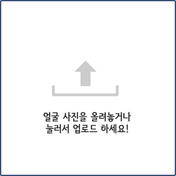

관상은 싸이언스 (Ver.남자)
Home
Link
Dropdown
Action
Another action
Something else here
Disabled
Search
관상은 싸이언스!
내 얼굴에도 범죄자의 관상이 있을까!?
500명의 범죄자의 얼굴로 만들어진 Ai 입니다.

AI가 당신의 얼굴과 범죄성향을 분석중입니다.
다른 사진으로 재시도
Please enable JavaScript to view the
comments powered by Disqus.